<!DOCTYPE lake>
<p data-lake-id="u65fb3385" id="u65fb3385"><span data-lake-id="u3df34515" id="u3df34515">SquareLineStudio是一个lvgl的图形化编辑工具，类似的还有GUI Guider，EEZ Studio</span></p><p data-lake-id="u626c8273" id="u626c8273"><span data-lake-id="u1f6fa572" id="u1f6fa572">官方网站：</span><a data-lake-id="u3554d17c" href="https://squareline.io/" id="u3554d17c" rel="noopener noreferrer" target="_blank"><span data-lake-id="u96c13f5f" id="u96c13f5f">https://squareline.io/</span></a></p><p data-lake-id="u15a93043" id="u15a93043"><span data-lake-id="u15e11e79" id="u15e11e79">表盘资源链接：</span><a data-lake-id="u98b5bc3e" href="https://amazfitwatchfaces.com/" id="u98b5bc3e" rel="noopener noreferrer" target="_blank"><span data-lake-id="uc5903641" id="uc5903641">https://amazfitwatchfaces.com/</span></a></p><p data-lake-id="u46c873c8" id="u46c873c8"><a class="yuque-card-link" href="../../_assets/bfe308b7a2cc4196e0ad10ba.7z">Watch_assets.7z</a></p><h1 data-lake-id="RRVNu" id="RRVNu"><span data-lake-id="uabb8191d" id="uabb8191d">软件安装</span></h1><p data-lake-id="u2d778f10" id="u2d778f10"><br/></p><p data-lake-id="ua6ee8461" id="ua6ee8461" style="text-align: center">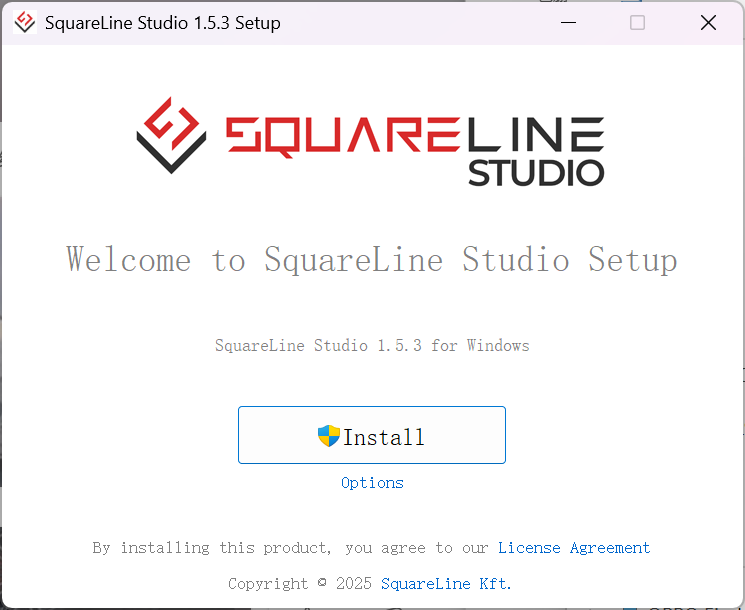</p><p data-lake-id="u7f9e40d8" id="u7f9e40d8" style="text-align: center">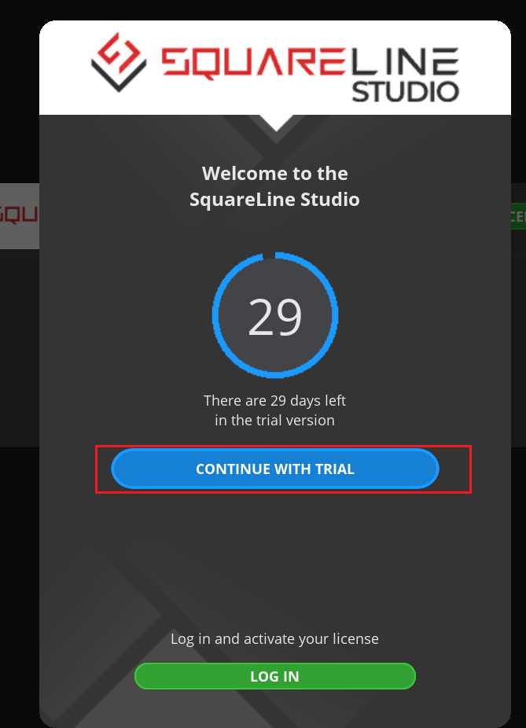</p><p data-lake-id="ue6306680" id="ue6306680">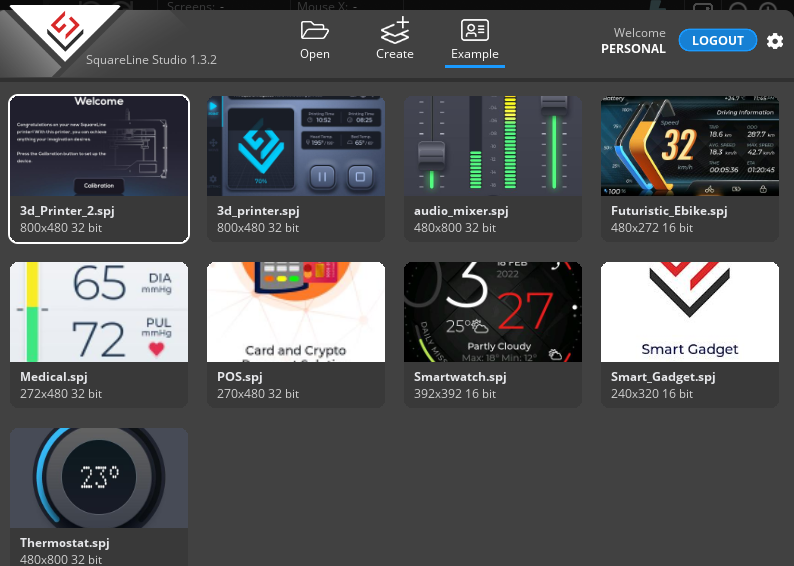</p><h1 data-lake-id="BlBcD" id="BlBcD"><span data-lake-id="u791f465b" id="u791f465b">表盘设计</span></h1><p data-lake-id="ua43f9d0f" id="ua43f9d0f"><span data-lake-id="u33818fb8" id="u33818fb8">可用表盘资源：</span><a data-lake-id="u2ec18185" href="https://amazfitwatchfaces.com/" id="u2ec18185" rel="noopener noreferrer" target="_blank"><span data-lake-id="uba58df52" id="uba58df52">https://amazfitwatchfaces.com/</span></a></p><h2 data-lake-id="UZVEV" data-lake-index-type="2" id="UZVEV"><span data-lake-id="u3a55656e" id="u3a55656e">新建工程</span></h2><p data-lake-id="ueb143c0b" id="ueb143c0b"><br/></p><p data-lake-id="u34771548" id="u34771548">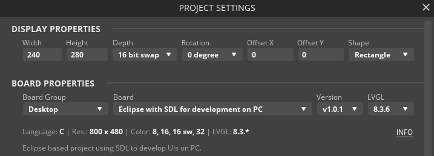</p><p data-lake-id="u540822da" id="u540822da"><br/></p><h2 data-lake-id="Sjqo4" data-lake-index-type="2" id="Sjqo4"><span data-lake-id="u2f581958" id="u2f581958">绘制内容</span></h2><p data-lake-id="u8062ec32" id="u8062ec32"><span data-lake-id="u4ab9f83e" id="u4ab9f83e">以下两个任务，在天空星上，请完成简约表盘</span></p><h3 data-lake-id="sem1I" data-lake-index-type="2" id="sem1I"><span data-lake-id="uf893b5e8" id="uf893b5e8">简约表盘</span></h3><p data-lake-id="uf7d7c97e" id="uf7d7c97e"><br/></p><p data-lake-id="u6a24d475" id="u6a24d475" style="text-align: center">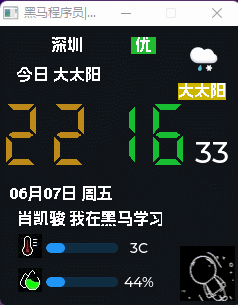</p><p data-lake-id="u63f525ff" id="u63f525ff" style="text-align: center"><br/></p><h3 data-lake-id="BxMQ5" data-lake-index-type="2" id="BxMQ5"><span data-lake-id="u68734e4e" id="u68734e4e">旋转指针表盘</span></h3><p data-lake-id="u8f4d92db" id="u8f4d92db" style="text-align: center">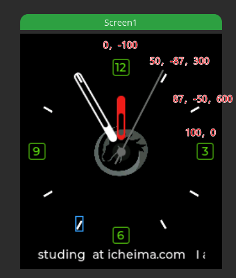</p><p data-lake-id="u6818c0f7" id="u6818c0f7" style="text-align: center">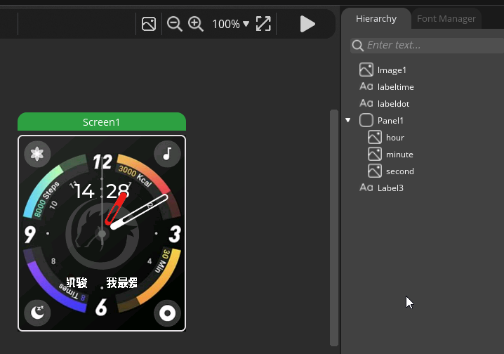</p><h4 data-lake-id="npvmx" data-lake-index-type="2" id="npvmx"><span data-lake-id="u4ff29b08" id="u4ff29b08">时针设置</span></h4><p data-lake-id="u193508a5" id="u193508a5" style="text-align: center">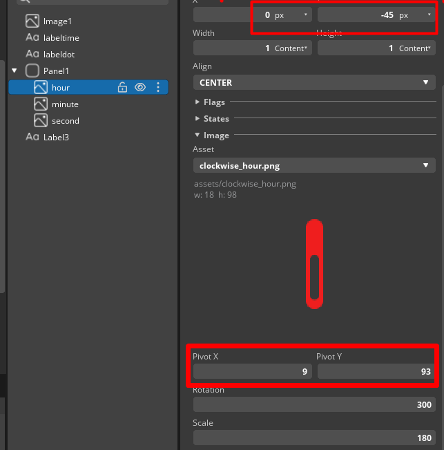</p><h4 data-lake-id="Fbncz" data-lake-index-type="2" id="Fbncz"><span data-lake-id="ud597fab5" id="ud597fab5">分针设置</span></h4><p data-lake-id="ufc1d538e" id="ufc1d538e" style="text-align: center">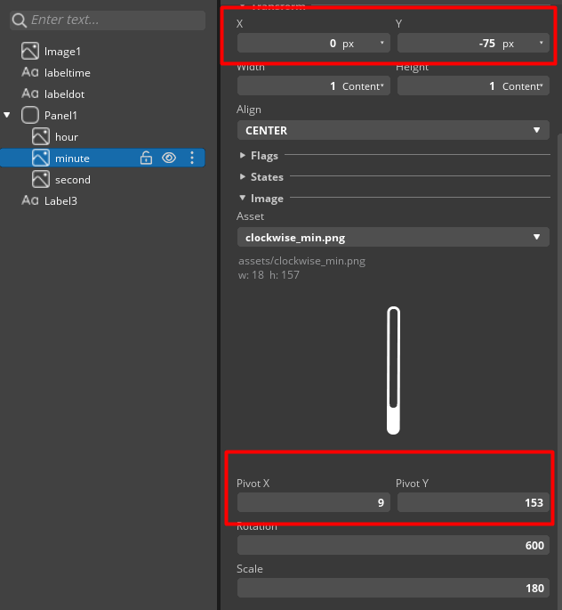</p><p data-lake-id="u9d3776d7" id="u9d3776d7"><br/></p><h4 data-lake-id="wuCqe" data-lake-index-type="2" id="wuCqe"><span data-lake-id="ue5022a3f" id="ue5022a3f">秒针设置</span></h4><p data-lake-id="ua5f8ab79" id="ua5f8ab79"><br/></p><p data-lake-id="ua0a28d2b" id="ua0a28d2b" style="text-align: center">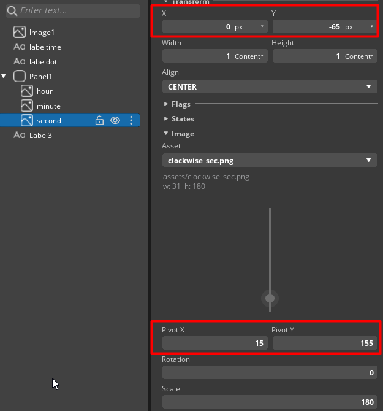</p><p data-lake-id="udeb5ab33" id="udeb5ab33"><br/></p><h2 data-lake-id="GqOVS" data-lake-index-type="2" id="GqOVS"><span data-lake-id="u9de8bd52" id="u9de8bd52">导出UI文件</span></h2><p data-lake-id="udc068c7a" id="udc068c7a"><span data-lake-id="ud127f0fb" id="ud127f0fb">配置导出路径，这里配置为工程里的output目录</span></p><p data-lake-id="u01bb9b3d" id="u01bb9b3d">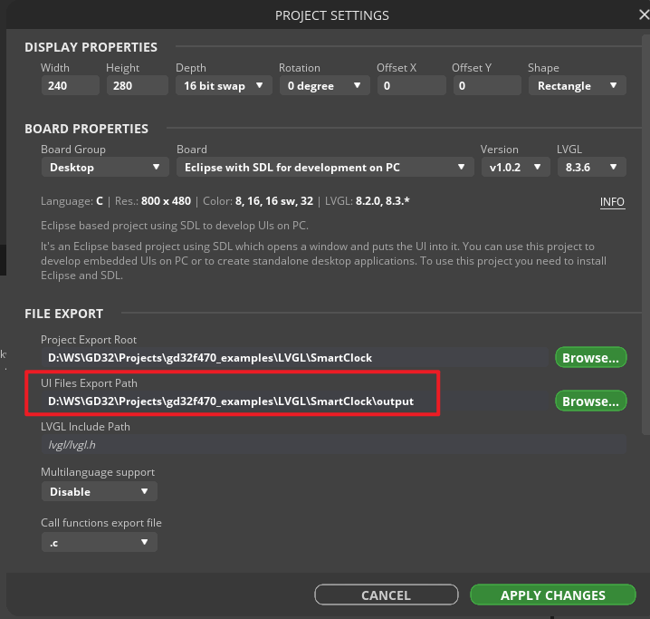</p><p data-lake-id="u3217859a" id="u3217859a"><span data-lake-id="u4616d7ee" id="u4616d7ee">执行导出</span></p><p data-lake-id="ud5e90a26" id="ud5e90a26">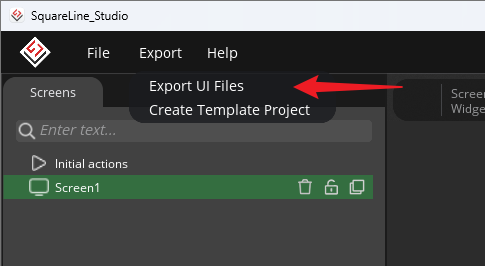</p><h2 data-lake-id="fBMJ5" data-lake-index-type="2" id="fBMJ5"><span data-lake-id="uca4c0698" id="uca4c0698">导入工程并加载</span></h2><p data-lake-id="uce540001" id="uce540001"><span data-lake-id="ucecaf93c" id="ucecaf93c">将output目录拷贝到工程目录，并重命名为</span><code data-lake-id="ued480d50" id="ued480d50"><span data-lake-id="uf39a0431" id="uf39a0431">smart_clock</span></code></p><p data-lake-id="ua8d55bed" id="ua8d55bed">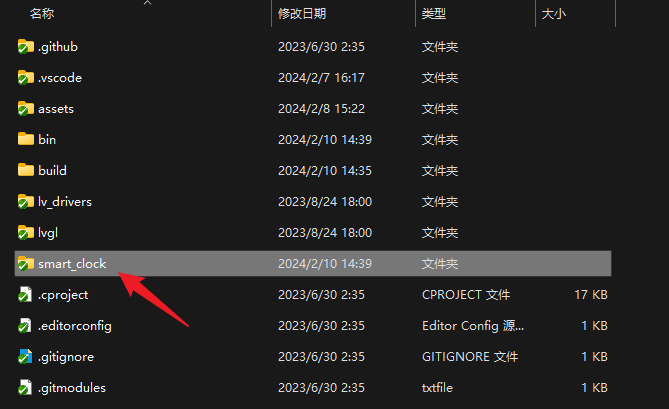</p><p data-lake-id="u12cb35d6" id="u12cb35d6"><br/></p><h1 data-lake-id="jLpTa" id="jLpTa"><span data-lake-id="u9eaa1e7b" id="u9eaa1e7b">v8.3版本模拟器配置</span></h1><p data-lake-id="uaed08c96" id="uaed08c96"><span data-lake-id="u16fbde6a" id="u16fbde6a">在CMakeLists.txt中添加路径</span></p><span class="yuque-card-unsupported">[codeblock]</span><p data-lake-id="ua8756890" id="ua8756890"><span data-lake-id="u1e104f0b" id="u1e104f0b">配置</span><code data-lake-id="u73eab899" id="u73eab899"><span data-lake-id="u04b6461d" id="u04b6461d">lv_conf.h</span></code><span data-lake-id="u6d696007" id="u6d696007">中的颜色模式</span></p><span class="yuque-card-unsupported">[codeblock]</span><p data-lake-id="ub71aec74" id="ub71aec74"><span data-lake-id="u3f470374" id="u3f470374">在main文件中导入ui并调用</span></p><span class="yuque-card-unsupported">[codeblock]</span><h1 data-lake-id="mT6mj" id="mT6mj"><span data-lake-id="ufed3172d" id="ufed3172d">v9.3版本模拟器配置</span></h1><h2 data-lake-id="YuTVR" id="YuTVR"><span data-lake-id="u1d5b5d9f" id="u1d5b5d9f">修改lv_conf.h</span></h2><p data-lake-id="u1676e4d0" id="u1676e4d0"><span data-lake-id="u7a9d0ad2" id="u7a9d0ad2">将颜色深度由32改为16</span></p><span class="yuque-card-unsupported">[codeblock]</span><h2 data-lake-id="JD63L" id="JD63L"><span data-lake-id="u871811b5" id="u871811b5">修改根目录CmakeList.txt</span></h2><p data-lake-id="u70285b91" id="u70285b91"><span data-lake-id="u9d0af9d7" id="u9d0af9d7">原内容：</span></p><span class="yuque-card-unsupported">[codeblock]</span><p data-lake-id="u13ea1fda" id="u13ea1fda"><span data-lake-id="u37c63bb6" id="u37c63bb6">修改后：</span></p><span class="yuque-card-unsupported">[codeblock]</span>